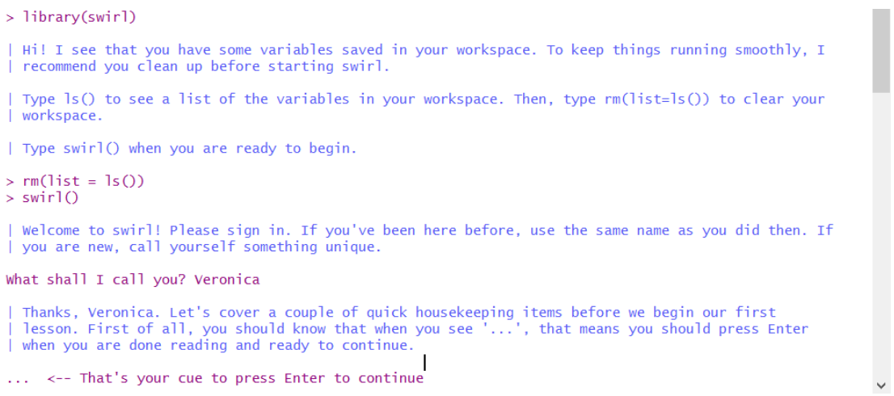

2 Introdução
“Existem apenas dois tipos de idiomas: os que as pessoas reclamam e os que ninguém usa”. - Bjarne Stroustrup
O modelo típico de análise de dados é similar:

Primeiramente, você deve importar seus dados para o R. Significa que você pega os dados armazenados em um arquivo, banco de dados ou API da Web e carrega-os em um data frames no R.
Logo após, a ideia é organizá-los. Significa armazená-los de forma consistente.
Depois de arrumar os dados, o próximo passo é transformá-los. Significa restringir observações de interesse, criar novas variáveis
Depois de organizar os dados com as variáveis necessárias, existem dois mecanismos principais de geração de conhecimento: visualização e modelagem. Eles têm pontos fortes e fracos complementares, portanto qualquer análise real se repetirá entre eles várias vezes.
A visualização é uma atividade fundamentalmente humana. Uma boa visualização mostrará coisas que você não esperava, ou fará novas perguntas sobre os dados.
Modelos são ferramentas complementares para visualização. Depois de fazer suas perguntas suficientemente precisas, você pode usar um modelo para respondê-las.
O último passo da ciência de dados é a comunicação, uma parte absolutamente crítica de qualquer projeto de análise de dados. Não importa o quão bem seus modelos e visualização levaram você a entender os dados, a menos que você também possa comunicar seus resultados a outras pessoas.
Ao redor de todas essas ferramentas está a programação. A programação é uma ferramenta transversal que você usa em todas as partes do projeto. Você não precisa ser um programador especialista para ser um cientista de dados, mas aprender mais sobre programação compensa, porque se tornar um programador melhor permite automatizar tarefas comuns e resolver novos problemas com maior facilidade.
2.1 Universo tidyverse

O tidyverse é uma coleção de pacotes R projetados para ciência de dados. Todos os pacotes compartilham uma filosofia de design, gramática e estruturas de dados subjacentes.
Os princípios fundamentais do tidyverse são:
- 1.Reutilizar estruturas de dados existentes;
- 2.Organizar funções simples usando o pipe;
- 3.Aderir à programação funcional;
- 4.Projetado para ser usado por seres humanos.
Assim como o processo típico do passo a passo apresentando anteriormente para análise de dados, o tidyverse é a ferramenta que o ajuda eficientemente a executar este processo.
## -- Attaching packages ---------------------------------- tidyverse 1.2.1 --## v ggplot2 3.2.1 v purrr 0.3.2
## v tibble 2.1.3 v dplyr 0.8.3
## v tidyr 1.0.0 v stringr 1.4.0
## v readr 1.3.1 v forcats 0.4.0## -- Conflicts ------------------------------------- tidyverse_conflicts() --
## x dplyr::filter() masks stats::filter()
## x dplyr::lag() masks stats::lag()## * __ _ __ . o * .
## / /_(_)__/ /_ ___ _____ _______ ___
## / __/ / _ / // / |/ / -_) __(_-</ -_)
## \__/_/\_,_/\_, /|___/\__/_/ /___/\__/
## * . /___/ o . *2.2 Porque devo aprender R e RStudio?
R é uma linguagem de programação estatística que vem passando por diversas evoluções e se tornando cada vez mais uma linguagem de amplos objetivos. Podemos entender o R também como um conjunto de pacotes e ferramentas estatísticas, munido de funções que facilitam sua utilização, desde a criação de simples rotinas até análises de dados complexas, com visualizações bem acabadas.
Segue alguns motivos para aprender o R:
- É completamente gratuito e de livre distribuição;
- Curva de aprendizado bastante amigável, sendo muito fácil de se aprender;
- Enorme quantidade de tutoriais e ajuda disponíveis gratuitamente na internet;
- É excelente para criar rotinas e sistematizar tarefas repetitivas;
- Amplamente utilizado pela comunidade acadêmica e pelo mercado;
- Quantidade enorme de pacotes, para diversos tipos de necessidades;
- Ótima ferramenta para criar relatórios e gráficos.
Apenas para exemplificar-se sua versatilidade, esta apostila e os slides das aulas foram todos feitos em R.
A primeira coisa que você precisa fazer para iniciar o R é instalá-lo no seu computador. O R funciona em praticamente todas as plataformas disponíveis, incluindo os sistemas Windows, Mac OS X e Linux amplamente disponíveis.
- Para instalar o R, baixe a versão adequada para seu computador em: https://cloud.r-project.org/.
Uma nova versão principal do R sai uma vez por ano, e há 2 ou 3 versões menores a cada ano. É uma boa ideia atualizar regularmente. A atualização pode ser um pouco complicada, especialmente para as versões principais, que exigem a reinstalação de todos os seus pacotes.
Há também um ambiente de desenvolvimento integrado (IDE) disponível para o R, construído pelo RStudio. IDE, do inglês Integrated Development Environment ou Ambiente de Desenvolvimento Integrado, é um programa de computador que reúne características e ferramentas de apoio ao desenvolvimento de software com o objetivo de agilizar este processo. O RStudio é atualizado duas vezes por ano. Quando uma nova versão estiver disponível, o RStudio informará você.
- Para instalar o RStudio, baixe a versão adequada para seu computador em: https://www.rstudio.com/products/rstudio/download/.
Você pode ver como instalar o R e o RStudio aqui:
Após instalado, o R tem uma interface assim, com apenas o console para digitar comandos:

Experimente um comando: 2+2, cujo output é 4:
## [1] 4E a interface do RStudio é dividida, inicialmente, em 3 partes:

Do lado esquerdo fica o console, onde os comandos podem ser digitados e onde ficam os outputs.
No lado superior direito há duas abas:
-i) Environment, que é onde ficam armazendos os objetos criados, bases de dados importadas, etc; e
-ii) History, onde ficam o histórico dos comandos executados.
A forma mais eficiente e prática de usar o R ou o RStudio é através de um script. No RStudio, vá em File → New File → R Script. A interface agora fica dividida em 4 partes:

No script você pode digitar comandos a serem executados e também comentários.
2.3 Classes de Objetos R
R possui 5 classes básicas de objetos, também chamados de objetos “atômicas”:
character;
numeric (real numbers);
integer;
complex;
logical (True/False).
O tipo mais básico de objeto R é um vetor. Um vetor só pode conter elementos de uma mesma classe. Mas há uma exceção, que é uma lista. Uma lista é representada como um vetor, mas pode conter objetos de diferentes classes.
Características do vetor:
Coleção ordenada de valores;
Estrutura unidimensional.
Usando a função c() para criar vetores:
## [1] 10 5 2 4 8 9## [1] "numeric"Por que numeric e não integer? Para forçar a representação de um número para inteiro é necessário usar o sufixo L.
## [1] 10 5 2 4 8 9## [1] "integer"Note que a diferença entre numeric e integer também possui impacto computacional, pois o armazenamento de números inteiros ocupa menos espaço na memória. Dessa forma, esperamos que o vetor x acima ocupe menos espaço na memória do que o vetor num, embora sejam aparentemente idênticos. Usamos a função object.size() fornece uma estimativa da memória que está sendo usada para armazenar um objeto R.Veja:
## 96 bytes## 80 bytesA diferença pode parecer pequena, mas pode ter um grande impacto computacional quando os vetores são formados por milhares ou milhões de números
2.4 Atributos
Os objetos R podem ter atributos, como metadados para o objeto. Esses metadados podem ser muito úteis, pois ajudam a descrever o objeto. Por exemplo, nomes de colunas em um quadro de dados ajudam a nos dizer quais dados estão contidos em cada uma das colunas. Alguns exemplos de atributos de objeto R são:
nomes, dimnames;
dimensões (por exemplo, matrizes, matrizes);
classe (por exemplo, inteiro, numérico);
comprimento;
outros atributos/metadados definidos pelo usuário.
Os atributos de um objeto (se houver) podem ser acessados usando a função attributes(). Nem todos os objetos R contêm atributos; nesse caso, a attributes() retorna NULL.
2.5 swirl
O swirl é um pacote do R construído para transformar o console em uma ferramenta interativa para aprender R. swirl ensina programação de R e ciência de dados interativamente, no seu próprio ritmo e diretamente no console do R. Para entender melhor o projeto, veja http://swirlstats.com/ e http://swirlstats.com/students. Nestes endereços são dados os detalhes sobre como usar o swirl. Uma vez intalado e carregado o pacote, você é levado a efetuar tarefas: 
O swirl dá acesso às tarefas de cursos de R que estão disponíveis também no Coursera, como o R Programming: The basics of programming in R, em https://pt.coursera.org/learn/r-programming. Além deste, estão disponíveis no swirl: Regression Models: The basics of regression modeling in R, Statistical Inference: The basics of statistical inference in R, e Exploratory Data Analysis: The basics of exploring data in R.